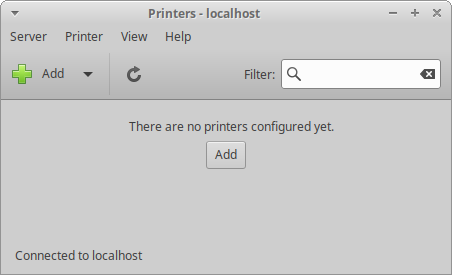
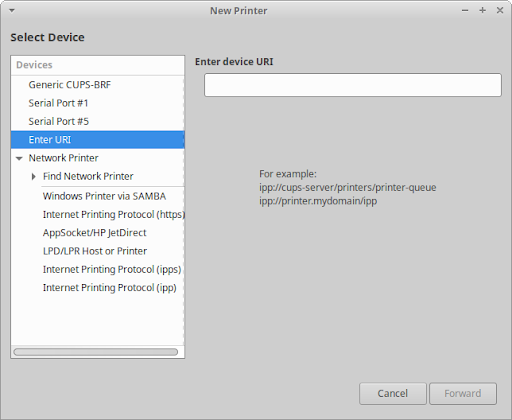
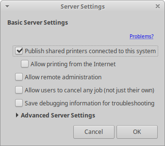
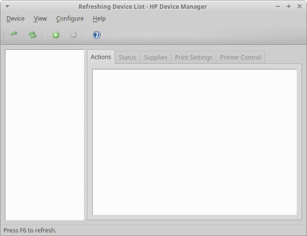
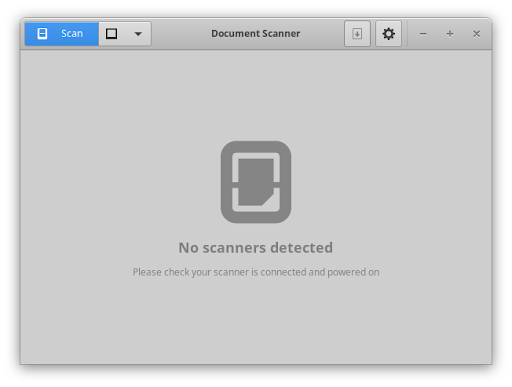

Table des matières
La majorité des imprimantes grand public sont automatiquement prises en charge par Xubuntu, car elles utilisent le back-end CUPS (Common UNIX Printing System). Cela inclut la prise en charge de l’impression réseau WiFi/filaire sans pilote avec des imprimantes prenant en charge IPP Everywhere et Apple AirPrint. Si votre imprimante n'est pas immédiatement prise en charge par Xubuntu, vous devrez peut-être installer un logiciel supplémentaire, tel que Gutenprint ( printer-driver-gutenprint
printer-driver-gutenprint ippusbxd
ippusbxd
La gestion des imprimantes peut être effectuée dans la boîte de dialogue de paramètres Imprimantesaccessible depuis la catégorie Matériel du  , la catégorie Paramètres de l'application
, la catégorie Paramètres de l'application  (Ctrl + Échap), dans la Liste d''applications (Alt + F3).
(Ctrl + Échap), dans la Liste d''applications (Alt + F3).

La boîte de dialogue Paramètres des imprimantes vous permet d'ajouter une nouvelle imprimante locale (une imprimante directement connectée à votre ordinateur via un port USB, série ou imprimante) ou une imprimante réseau (une imprimante connectée sur votre réseau ou une imprimante partagée sur le réseau via un autre ordinateur). Il vous permet également de modifier les paramètres des imprimantes répertoriées, comme renommer la façon dont elles sont étiquetées sur votre système, les redémarrer ou les désactiver. Vous pouvez également partager une imprimante avec d'autres ordinateurs de votre réseau, ce qui en fait une imprimante réseau. Selon la marque et le modèle de votre imprimante, vous pouvez également vérifier les consommables de votre imprimante, tels que le toner ou l'encre ainsi que le papier, ou envoyer des travaux d'impression test.
Configurer une nouvelle imprimante locale devrait être aussi simple que de la brancher sur votre ordinateur et de la mettre sous tension. L'imprimante doit être automatiquement détectée et configurée. Une fois détecté avec succès, une icône d'imprimante apparaîtra dans la zone de notification du panneau et une fenêtre contextuelle de notification apparaîtra avec le texte L'imprimante est prête à imprimer.

Si votre imprimante n'a pas été détectée, vous devrez suivre ces étapes :
Ouvrez la boîte de dialogue paramètres des imprimantes.
Cliquez sur le bouton Ajouter dans la barre d'outils ou sur → → dans le menu pour ouvrir la boîte de dialogue .
Sélectionnez l'entrée Imprimante, Port, URI, Protocole ou Imprimante réseau appropriée dans la liste Périphériques à gauche de la boîte de dialogue. Si votre imprimante n'est pas visible, vous devrez peut-être cliquer sur le triangle à côté de « Rechercher une imprimante réseau » pour développer la liste des imprimantes sur votre réseau.
Le cas échéant, remplissez tous les détails pertinents dans les champs de texte et/ou les listes déroulantes à droite de la boîte de dialogue, puis cliquez sur le bouton .
Si vous ajoutez une imprimante locale, votre ordinateur la recherchera et installera ses pilotes. Si vous installez une imprimante réseau, vous passerez par des étapes supplémentaires de sélection du fabricant de l'imprimante, du modèle d'imprimante et du pilote.
Vous serez ensuite invité à saisir un nom court, une description et l'emplacement de l'imprimante.
Appuyez sur le bouton pour finaliser la configuration de l'imprimante.
Une boîte de dialogue s'affichera vous demandant Souhaitez-vous imprimer une page de test ?
Si vous appuyez sur le bouton , une page de test s'imprimera et vous pourrez vérifier si elle s'est correctement imprimée, ou vous pourrez appuyer sur . De toute façon, votre imprimante est prête à imprimer.
Si vous rencontrez des problèmes pour ajouter une imprimante avec les étapes ci-dessus, vous pouvez essayer d'utiliser l'interface basée sur le navigateur CUPS. Elle est accessible sur http://localhost:631/. Cliquez sur l'élément de menu Administration en haut de la page pour accéder aux options permettant d'ajouter et de rechercher de nouvelles imprimantes. N'apportez aucune modification à la boîte de dialogue paramètres des imprimantes ou aux autres utilitaires de gestion des imprimantes système tant que vous n'avez pas fini d'utiliser l'interface basée sur le navigateur CUPS. Vous devrez peut-être redémarrer CUPS pour qu'il reflète les modifications que vous apportez directement dans l'interface basée sur le navigateur.
![[Note]](../../libs-common/images/note.png)
|
|
|
Si l'imprimante est directement connectée à une machine Windows sur votre réseau, choisissez l'entrée Imprimante Windows via SAMBA dans la liste Périphériques. Si vous ne connaissez pas le protocole ou les détails de votre imprimante réseau, vous devez consulter le manuel de l'imprimante ou demander à votre administrateur réseau. Recherchez dans la base de données OpenPrinting ou consultez la page d'aide imprimante de la communauté pour obtenir des informations sur votre imprimante. |
Si vous souhaitez partager votre imprimante locale avec d'autres ordinateurs de votre réseau :
Ouvrez la boîte de dialogue paramètres des imprimantes.
Cliquez sur → dans le menu.
Cochez la case Publier les imprimantes partagées connectées à ce système.
Cliquez sur le bouton

Accédez ensuite à votre installation Xubuntu secondaire et ouvrez la boîte de dialogue Paramètres des imprimantes. Cliquez sur le bouton Ajouter dans la barre d'outils, puis développez l'option Imprimante réseau. L’imprimante partagée doit apparaître ci-dessous comme adresse IP de l’ordinateur partagé. Vous devrez peut-être d'abord rechercher l'adresse IP à l'aide de l'option Rechercher une imprimante réseau.
Si vous possédez une imprimante HP (Hewlett Packard) et que vous souhaitez un logiciel supplémentaire pour la gérer, vous pouvez installer les utilitaires GUI HP Linux Imaging and Printing (HPLIP) GUI utilities ( hplib-gui
hplib-gui et la catégorie Autres du . Sur les imprimantes à jet d'encre prises en charge, vous pourrez surveiller les niveaux d'encre, vérifier l'état de l'imprimante, modifier la taille de la page et la qualité d'impression, ainsi que nettoyer les têtes d'impression. Sur les imprimantes laser prises en charge, vous pourrez surveiller le niveau de toner, vérifier l'état de l'imprimante, modifier la taille de la page et gérer la qualité d'impression. Pour les appareils tout-en-un (multifonctions), vous pourrez modifier les paramètres et les fonctionnalités du fax. Pour plus d’informations sur HPLIP cliquez ici.
et la catégorie Autres du . Sur les imprimantes à jet d'encre prises en charge, vous pourrez surveiller les niveaux d'encre, vérifier l'état de l'imprimante, modifier la taille de la page et la qualité d'impression, ainsi que nettoyer les têtes d'impression. Sur les imprimantes laser prises en charge, vous pourrez surveiller le niveau de toner, vérifier l'état de l'imprimante, modifier la taille de la page et gérer la qualité d'impression. Pour les appareils tout-en-un (multifonctions), vous pourrez modifier les paramètres et les fonctionnalités du fax. Pour plus d’informations sur HPLIP cliquez ici.

La base de données OpenPrinting stocke des informations sur les imprimantes, leurs pilotes et leur prise en charge sous Linux. Si vous n'êtes pas sûr de la prise en charge d'une imprimante dans un environnement Linux, vérifiez cette base de données. C'est également une bonne base de données à vérifier avant d'acheter une nouvelle imprimante.
Semblable à la prise en charge des imprimantes par Xubuntu, il prend également en charge plug and play pour de nombreux scanners, car nombre d'entre eux font aujourd'hui partie d'appareils multifonctions. La prise en charge des scanners sous Linux est assurée par le projet SANE qui maintient liste des scanners pris en charge. Une prise en charge supplémentaire du scanner peut être obtenue avec l'installation de SANE-airscan (installer), qui permet une numérisation réseau sans pilote avec des scanners prenant en charge Apple AirScan (eSCL) et Microsoft WSD.
Pour commencer à utiliser votre scanner, ouvrez le Numériseur de documents ou Simple Scan , application accessible depuis la catégorie Graphisme du  (Ctrl + Échap) et dans laListe des applications (Alt + F3). Suivez les étapes suivantes pour numériser un document, une image/une image, etc. :
(Ctrl + Échap) et dans laListe des applications (Alt + F3). Suivez les étapes suivantes pour numériser un document, une image/une image, etc. :
Connectez votre scanner et allumez-le.
Placez ce que vous souhaitez numériser sur le plateau ou le chargeur du scanner.
Fermez le couvercle si vous en avez un.
Cliquez sur la flèche à droite du bouton et choisissez le type de document que vous aller numériser, Texte ou Photo.
Cliquez sur le bouton pour commencer votre numérisation.

Il y a deux raisons pour lesquelles vous pourriez recevoir ce message :
Votre scanner n'est pas reconnu automatiquement par Xubuntu. Par exemple, la plupart des scanners sur port parallèle et les imprimantes/scanners/fax multifonctions de Lexmark ne sont pas pris en charge.
Le pilote pour votre scanner n'a pas été chargé automatiquement.
Vous pourrez peut-être faire fonctionner votre scanner en installant un pilote ou en modifiant certains fichiers de configuration. Merci de demander conseil sur les forums Ubuntu ou sur AskUbuntu.
|
|
|
|
Pour faire fonctionner certains scanners, vous pourriez avoir besoin de brancher le scanner après que l'ordinateur ait démarré. |
Certains périphérique de numérisation ont des pilotes incomplets issus du projet SANE. Ils peuvent parfois être utilisés, mais toutes leurs fonctionnalités ne pourront peut-être pas être opérationnelles. Concernant ces scanners :
Installez le paquet  libsane-extras
libsane-extras
Exécutez pkexec mousepad /etc/sane.d/dll.conf en ligne de commande pour éditer le ficher de pilote issus du projet SANE.
Activez le bon pilote pour votre scanner en enlevant le # devant le nom du pilote. Vous pourriez avoir besoin de chercher sur le Web pour savoir quel est le bon pilote.
Enregistrez le fichier et ouvrez Simple Scan. Si tout c'est bien passé, votre scanner fonctionnera.
 |
 |
|
| Chapitre 8. Paramètres - Connectivité |

|
Chapitre 10. Gestion des utilisateurs |